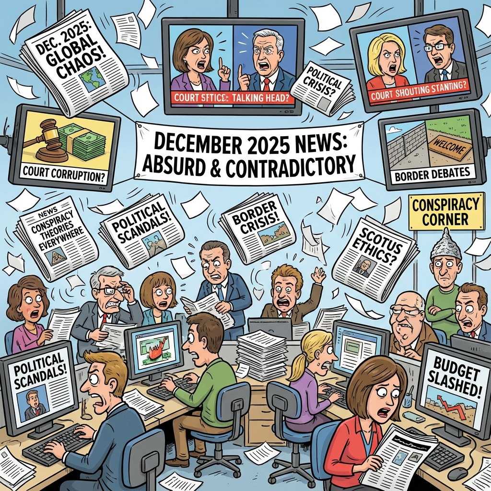

The Daily Globe: Charlie Kirk Death Investigation and Mental Health Weaponization Debate, Immigration and Border Security Polarization, and Banco Master Scandal and Justice Alexandre de Moraes Controversy
Published on 2025-12-24

World
- Charlie Kirk Death Investigation and Mental Health Weaponization Debate
Conservative figure Candace Owens launched an investigation into the death of political influencer Charlie Kirk, sparking intense debate over conspiracy theories and accusations of weaponizing psychiatry against political opponents, with discussions on free speech limits.
- Religious Debate in India: Hindu Society Praised for Openness to Dissent
A viral public debate between an atheist and Muslim participant highlighted India's religious tolerance compared to other regions, fueling global conversations on freedom of expression, secularism, and cultural pluralism.
- Epstein Scandal Resurfacing: Money Laundering via Art and Political Connections
Newly surfaced Epstein emails speculated on Saudi Prince MBS purchasing Leonardo da Vinci's 'Salvator Mundi' for $450 million as potential money laundering linked to political favors, reigniting theories on elite corruption.
USA
- Immigration and Border Security Polarization
Heated debates over open borders, drug trafficking, and immigration vetting dominated X discussions, with conservatives opposing border policies and progressives defending immigrant rights and due process.
- Transgender Rights and Gender-Affirming Care Controversy
Continued polarization over youth gender-affirming care, with critics linking medical transitions to harmful policies and progressives defending bodily autonomy and trans rights as foundational issues.
- Crime Policies and Mental Health Infrastructure Crisis
Debates raged over soft-on-crime policies in blue states, unrestricted drug flows, and inadequate mental health infrastructure, with right-leaning accounts blaming Democratic governance for public safety failures.
Brazil
- Banco Master Scandal and Justice Alexandre de Moraes Controversy
Outrage over alleged ties between Supreme Court Justice Alexandre de Moraes and his wife to troubled Banco Master, with revelations of contracts, calls to the Central Bank, and a 100-year secrecy decree fueling corruption accusations.
- Parliamentary Amendments and Budget Priorities
Fury over Congress approving R$61 billion in earmarked amendments for political bases while cutting health and education funding, criticized as parliamentary monarchy prioritizing privileges over public welfare.
- Havaianas Controversy and Governance Tone-Deafness
São Paulo Governor Tarcísio de Freitas sparked debate with a pun-laden response to a political ad involving Havaianas sandals, seen by critics as trivializing governance amid economic challenges.
Topic Index
- political-instability
- international-tensions
- military-action
- economic-uncertainty
- justice-system
- natural-disasters
- technology-regulation
- commodity-markets